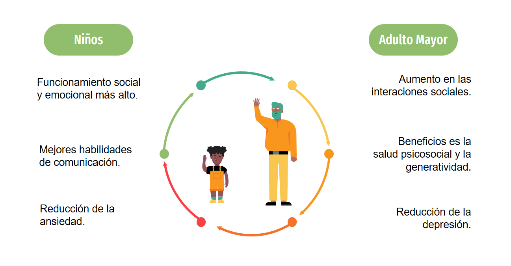

Cuando se habla de intergeneracionalidad, se hace referencia a todas aquellas relaciones que se establecen entre personas de distinta generación o con diferencias notorias en la edad. Por ejemplo, una relación intergeneracional la encontramos en el vínculo familiar, entre abuelo y nieto.
Las relaciones sociales se buscan a lo largo de toda la vida convirtiéndose en una necesidad humana, en la mayoría de casos estas disminuyen a medida que las personas envejecen, aumentando el número de personas mayores que sufren de aislamiento y soledad, factores que se convierten es un riesgo importante para la salud. El compromiso intergeneracional busca reducir estos riegos y beneficiar a las personas que conforman la relación, por ejemplo, en ambientes donde niños y adultos mayores conviven juntos se han vistos beneficios como:
En programas de servicios intergeneracionales el trabajo con adultos mayores contribuye al desarrollo de habilidades de estudiantes universitarios, los jóvenes se sientes más alegres y agradecidos por el apoyo, impulsan sus capacidades de planificación, reducen conductas antisociales y limitan las conductas que pueden ser de riesgo para la salud. Por otra parte, los adultos mayores tienen cambios positivos de humor, aumento en la vitalidad, autoestima y reducción en síntomas depresivos.
Así como el adulto mayor desempeña un rol muy importante en relaciones intergeneracionales como mentor o en voluntariado, él también puede ser parte de un proceso de aprendizaje intergeneracional para continuar su formación. En la etapa de envejecimiento se busca aprovechar los momentos de ocio para aprender sobre nuevos intereses o adquirir nuevas habilidades prácticas que ayuden en el trabajo o en la resolución de problemas de la vida diaria. En caso de participar en un contexto académico, el aprendizaje más que ser una enseñanza dirigida por un instructor, debe tener un enfoque más auto dirigido por el adulto mayor, recordando siempre que sus experiencias son una fuente de conocimientos para la otra persona.
Las relaciones intergeneracionales dan la oportunidad de crear un vínculo social de amplio alcance y potencial comprendiendo ambientes académicos, de convivencia y acompañamiento. También es el inicio para formar comunidades más comprometidas con el adulto mayor y pensar que se puede crear un impacto a futuro si desde ahora se da un lugar en la sociedad a fomentar la intergeneracionalidad entre el adulto mayor y los jóvenes. Si estas interesado en el tema, deja tus datos y un mensaje contando si te pareció de importancia lo que leíste y ¿por qué?.